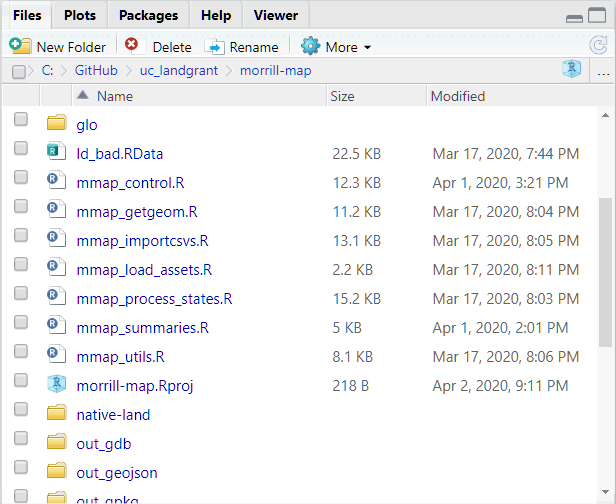

Working with Files and Folders
When you import or export objects to disk using a script, you don’t have the luxury of an ‘Open’ or ‘Save As’ dialog. You have to specify where it’s coming from (or going to).
All file paths are relative to the working directory. You can view the working directory with getwd():
To see a list of files in the current working directory, use list.files():
## List the files in the current working directory
## Note '.' is shorthand for the current working directory
list.files(".")But what if you want to list files that in a subdirectory of the current directory? Use as the folder:
./mysubfolder
Here . signifies ’start at the working directory, and /mysubfolder tell R to look in a subfolder.
R always requires forward slashes (/), not back slashes (\).
Sorry Windows users!
An absolute file path starts with '/', which indicates the root directory. It may also include a volumne (drive letter). Examples:
## Define a file name that begins with the root directory (on the current drive / volumne)
x <- "/temp/test.csv"
## See if it exists
file.exists(x)## [1] TRUE## [1] TRUETo ensure you didn’t type a filename incorrectly, use file.exists()
File names on Windows are not case sensitive, but for compatibility with Linux make it a practice to match the case.
You can import a csv file using read.csv(x), where x is the name of a file.
You can change the working directory with setwd().
You can also set the working directory from the RStudio Session menu.
The ‘Home’ directory is usually your Documents folder, and can be specified with the ~ character.
## [1] "C:/Users/Andy/Documents"The ‘root’ directory on the current volume (drive) can be specified with the ‘/’ character. You can specify the drive letter if you’d like also (e.g., c:/).
setwd("/projects/soc101/sf_census")
getwd()
setwd("./data")
getwd()
tools::file_path_as_absolute(".")Try these functions:
Use file.choose() to get a file name with a standard file selection window.
You can save individual variables to disk with the save() function. save() saves objects in a binary, compressed file format that R understands. This makes it very flexible and easy to bring back into R using the sister function load().
If you don’t specify a directory as part of the file name, it will go in the working directory.
x_nums <- rnorm(1000) * 20
## Save to to My Documents
save(x_nums, file="~/my_random_numbers.RData").RData and .Rda are common extensions for R data files, but you can name your file anything you want.
To save your entire workspace (all variables in memory), use the save.image() function. RStudio also has a ‘Save Workspace’ button on the ‘Environment’ window, and will probably ask if you want to save your workspace when you quit the program.
To load a file back into memory, use the load() function.
You can save and open scripts, R Markdown files, etc. from the RStudio File menu.
If you have a set of commands that you want to rerun repeatedly, you can save them as a *.R file and then run them all at once with source() function.
source() automatically runs all the commands in a script, so only use it with scripts that are ‘ready-to-go’. To run commands one-by-one, open it in RStudio.
In RStudio, use the Files tab to browse your files, open R files, and set the working directory.

You can open many files by clicking on them in Files pane:
.R - open for editing.txt, .css - open for editing.RData, .rda - import objects into RStudioFunctions that import or export data typically require a file name.
File names are in reference to the current Working Directory.